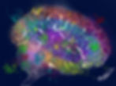

Cuando me diagnosticaron TDAH, una de las grandes preguntas que me hice fue : ¿por qué a mí? ¿Me tocó la peor parte o había algo más profundo en juego? Como muchos, aprendí rápidamente que el TDAH no se trata de pereza, mala crianza ni de "no esforzarse lo suficiente". Es un trastorno del desarrollo neurológico, y la genética juega un papel fundamental en su formación.
Lo mismo ocurre con el autismo. El trastorno del espectro autista (TEA) también es altamente hereditario, y estudios genéticos demuestran que el ADN es el factor más importante en su desarrollo. El TDAH y el autismo suelen ser hereditarios porque comparten muchas de las mismas raíces genéticas.
En esta publicación, quiero analizar lo que la ciencia nos dice sobre el lado genético del TDAH y el autismo, por qué es importante y cómo este conocimiento puede ayudarnos a comprendernos mejor a nosotros mismos.
¿Son genéticos el TDAH y el autismo? La evidencia hasta la fecha
La respuesta corta es: sí, considerablemente. Las investigaciones han demostrado sistemáticamente que el TDAH y el autismo son dos de los trastornos psiquiátricos con mayor probabilidad de herencia. Estudios en gemelos para el TDAH , por ejemplo, revelan tasas de heredabilidad del 70-80% , lo que significa que la genética explica la mayor parte del riesgo de desarrollar TDAH. Asimismo, estudios en gemelos para el autismo revelan tasas de heredabilidad del 80-90% , lo que significa que el autismo también tiene una fuerte naturaleza genética. Ambas son más altas que trastornos como la depresión o la ansiedad.
Esto no significa que el entorno no influya. Factores como la salud prenatal, el estrés en los primeros años de vida y las toxinas pueden influir en la expresión genética. Pero sí significa que, con frecuencia, tanto el TDAH como el autismo se transmiten en familias. Si tienes TDAH o autismo, es muy probable que al menos uno de tus padres o un hijo comparta esa conexión genética.
¿Qué genes están involucrados?
Los genes “clásicos” del TDAH
Una de las primeras cosas que hicieron los científicos al estudiar el TDAH fue observar el sistema de "motivación y recompensa" del cerebro, impulsado por un mensajero químico llamado dopamina. Piense en la dopamina como el combustible que nos mantiene concentrados, motivados y listos para actuar. Algunos de los primeros genes del TDAH descubiertos están relacionados con el funcionamiento de la dopamina.
- DRD4: Este gen es como el regulador de la sensibilidad a las recompensas. Una versión específica, llamada alelo de 7 repeticiones, suele estar asociada con personas que anhelan la novedad o la emoción. No causa TDAH, pero altera la forma en que se manifiesta la motivación, lo que puede dificultar aún más la perseverancia en tareas aburridas.
- DAT1 (también llamado SLC6A3) : Imagine la dopamina como pequeñas chispas en el cerebro. DAT1 es el equipo de limpieza que barre esas chispas una vez finalizado el trabajo. Diferentes versiones de este gen pueden alterar la eficiencia de este equipo, lo que puede afectar la concentración y el procesamiento de recompensas.
- DRD5 : Otro gen relacionado con la dopamina que aparece en estudios sobre el TDAH. Ayuda a ajustar la recepción de las señales de dopamina, especialmente en las regiones cerebrales relacionadas con la atención y el autocontrol.
Más allá de la dopamina: un panorama genético más amplio
A medida que las herramientas genéticas se hicieron más avanzadas, los científicos se dieron cuenta de que el TDAH no se limita a la dopamina. Muchos otros genes desempeñan funciones pequeñas pero importantes:
- LPHN3 : Una variante de este gen podría estar relacionada con la respuesta a los medicamentos estimulantes. Algunos estudios sugieren que podría explicar hasta 1 de cada 10 casos de TDAH.
- CDH13 : Este factor es fascinante porque también aparece en estudios sobre autismo, trastorno bipolar y esquizofrenia. Ayuda a explicar por qué estas afecciones a veces se presentan juntas en familias.
- Otros ayudantes: genes como SNAP25 (ayuda a las células cerebrales a “hablar” entre sí), HTR1B (parte del sistema de serotonina), GRIN2A (involucrado en el aprendizaje y la memoria) y BDNF (apoya el crecimiento y la flexibilidad del cerebro) contribuyen de maneras pequeñas pero significativas.
Los genes del autismo: un elenco más amplio de personajes
Al igual que el TDAH, el autismo no se reduce a un solo gen autista. En cambio, está influenciado por cientos de pequeños cambios dispersos en nuestro ADN. Cada uno por sí solo no influye mucho, pero juntos influyen.
Algunas de las que los científicos siguen recurriendo incluyen:
- CHD8: Piense en este como uno de los pilares del desarrollo cerebral. Las variaciones en este punto pueden influir en el crecimiento y la organización del cerebro.
- SHANK3: Este gen se centra en la comunicación. Ayuda a las neuronas a construir el andamiaje necesario para transmitir señales. Cuando se altera, este andamiaje puede debilitarse, lo que puede afectar el procesamiento de la información social y sensorial.
- NRXN1 y la familia NLGN: Son como los conectores que permiten que las neuronas se comuniquen y formen redes funcionales. Si el intercambio de información es más débil, el cableado puede ser menos fluido, lo que puede representar dificultades en la comunicación o la flexibilidad.
- Microdeleción 16p11.2: En lugar de un solo gen, se trata de una pequeña porción faltante de un cromosoma. Es uno de los hallazgos genéticos más comunes en el autismo y puede influir en el tamaño, el desarrollo y el aprendizaje del cerebro.
Ninguno de estos factores garantiza el autismo, y no todas las personas con autismo presentan estas variaciones. Pero juntos nos dan pistas sobre qué partes del cerebro son más sensibles a la conexión social, la comunicación y el procesamiento sensorial.
Vías genéticas compartidas: por qué el TDAH y el autismo se transmiten de la mano
Uno de los descubrimientos más interesantes (y frustrantes) que han realizado los científicos es que el TDAH y el autismo no son entidades separadas. Comparten gran parte del mismo cableado genético.
Por ejemplo:
- CDH13: Este gen se ha vinculado no solo al TDAH y al autismo, sino también a trastornos del estado de ánimo como el trastorno bipolar. Es como un gen de encrucijada, lo que significa que, cuando se altera, puede manifestarse de diferentes maneras según la combinación única de ADN y experiencias vitales de cada persona.
- SHANK3 (de nuevo): Ya hablamos de este gen en el autismo, pero también aparece en la investigación del TDAH. Esta coincidencia ayuda a explicar por qué a veces se observan ambos diagnósticos en la misma familia, o incluso en la misma persona.
- Otros ayudantes de la red: los genes que guían la conectividad cerebral, como los involucrados en las sinapsis (SNAP25), la serotonina (HTR1B) o el crecimiento cerebral (BDNF), también aparecen en ambas afecciones.
Lo que esto nos indica es que el TDAH y el autismo forman parte de una familia genética más amplia de diferencias en el desarrollo neurológico. A veces, estas diferencias se orientan más hacia la atención y la recompensa (TDAH), a veces hacia la comunicación social (autismo) y, a veces, hacia ambas.
En lugar de pensar en el TDAH y el autismo como dos caminos completamente separados, imagínelos como autopistas que discurren una junto a la otra, con muchas salidas y entradas compartidas. La genética es una de las principales razones.
Novedades en la investigación
Durante muchos años, la investigación del TDAH y el autismo se centró en un gen a la vez. Pero hoy en día, los científicos cuentan con herramientas mucho más potentes que nos brindan una visión mucho más clara y emocionante del panorama general.
- Sumando todo: Puntuaciones de Riesgo Poligénico (PGS): En lugar de analizar un gen a la vez, los científicos ahora examinan cientos de pequeñas variaciones en el genoma. Las combinan en lo que se denomina una puntuación de riesgo poligénico, que es similar a una puntuación de crédito, pero para las diferencias del neurodesarrollo. Tanto el TDAH como el autismo muestran perfiles poligénicos fuertes.
- Variantes raras: grandes cambios con gran impactoLa mayoría de las diferencias genéticas asociadas con el TDAH y el autismo son pequeñas, pero ocasionalmente los científicos detectan cambios más importantes. Estas se denominan variantes raras y pueden tener un efecto más fuerte.Un ejemplo en el autismo es la variación del número de copias (CNV) 16p11.2 , en la que falta o se duplica un fragmento del cromosoma 16. Este fragmento incluye unos 25 genes importantes para el desarrollo cerebral, y cuando se altera, puede afectar aspectos como el tamaño cerebral, el lenguaje y el aprendizaje.En el TDAH, los investigadores también han comenzado a descubrir variantes raras. Un estudio reciente señaló al KDM5B , un gen que ayuda a regular cómo se descomprime el ADN dentro de las células, lo que puede alterar la activación o desactivación de genes relacionados con el cerebro.Este tipo de cambios raros no son toda la historia, pero cuando aparecen, pueden tener un poderoso impacto en el desarrollo y funcionamiento del cerebro.
La red genética del TDAH y el autismo
Estos avances nos muestran que el TDAH y el autismo son aún más complejos de lo que pensábamos. No se trata solo de la dopamina ni de unos pocos genes "clásicos". Es una red de múltiples señales genéticas, cada una de las cuales estimula el cerebro de forma sutil. Cuanto mejor comprendamos esta red, más nos acercaremos a tratamientos y apoyos más personalizados, e incluso adaptados al perfil genético único de cada persona en el futuro.
La genética se encuentra con el cerebro

Nuestros genes no se quedan en un segundo plano. Están ocupados moldeando cómo nuestro cerebro crece, se conecta y funciona a diario. En el TDAH, muchas de las variaciones genéticas de las que hemos hablado influyen directamente en el funcionamiento del sistema dopaminérgico. En el autismo, muchas de las variaciones clave afectan la conexión y comunicación entre las neuronas. Ambos conjuntos de cambios se propagan, afectando los circuitos cerebrales que guían la planificación, la motivación, la interacción social y la toma de decisiones.
Regiones del cerebro afectadas por variaciones genéticas
- Corteza prefrontal (la "dirección general del cerebro"): Esta área nos ayuda a planificar, priorizar y pausar antes de actuar. En el TDAH, los cambios en la señalización de dopamina en esta zona pueden dificultar el filtrado de distracciones o la resistencia a los impulsos. En el autismo, las diferencias de conectividad en esta región pueden influir en el pensamiento flexible y la toma de decisiones sociales.
- Ganglios basales (el núcleo del hábito y la recompensa): Estas estructuras impulsan la motivación y el aprendizaje mediante recompensas. Las diferencias genéticas en el TDAH, como en el gen transportador DAT1, pueden modificar la eficacia con la que las recompensas refuerzan los hábitos. En el autismo, las variaciones en los genes que regulan las sinapsis pueden modificar la construcción de rutinas y la vinculación de la motivación con las recompensas sociales y no sociales.
- Red Frontoparietal (la multitarea): Esta red nos ayuda a gestionar la información y a desviar la atención. En el TDAH, ciertas variantes del receptor de dopamina pueden dificultar la retención de información en la memoria de trabajo o la fluidez en los cambios de ritmo. En el autismo, esta red puede mostrar diferencias en cómo se desvía la atención entre los detalles y el panorama general.
- Cerebelo (el cronometrador y coordinador): Considerado anteriormente solo como un centro de control motor, el cerebelo también facilita la sincronización, el ritmo y aspectos de la atención. Los genes vinculados al TDAH pueden determinar su tamaño y conectividad, lo que podría explicar por qué la gestión del tiempo resulta tan compleja. En el autismo, el cerebelo se ha vinculado con la coordinación, el procesamiento sensorial y la sincronización social, como la interpretación de las pausas en una conversación.
- Redes sociales y de comunicación (los "conectores"): Especialmente en el autismo, genes como SHANK3 y NRXN1 afectan las sinapsis en las regiones cerebrales que gestionan las señales sociales y el lenguaje. Estas diferencias ayudan a explicar por qué la comunicación social puede parecer más esforzada, mientras que los intereses no sociales pueden parecer más naturales y gratificantes.
Lo que muestran los estudios de imagen
Las exploraciones cerebrales lo confirman. En comparación con los cerebros neurotípicos, los cerebros con TDAH y autismo suelen mostrar:
- Diferencias en el volumen cerebral general en regiones como la corteza prefrontal, los ganglios basales y el cerebelo.
- Patrones de conectividad alterados, especialmente en redes de atención, motivación y procesamiento social.
- Respuestas de activación distintas: los cerebros con TDAH a menudo necesitan una “chispa” mayor para obtener la misma dosis de dopamina, mientras que los cerebros con autismo pueden procesar señales sociales e información sensorial de formas únicas.
Lo que esto significa para nosotros
Cuando conectamos los puntos entre los genes y las redes cerebrales, empezamos a ver el TDAH y el autismo no como debilidades, sino como conexiones diferentes. Por ejemplo:
- Dificultar para comenzar una tarea no es pereza. Puede reflejar cómo interactúan la corteza prefrontal y el sistema dopaminérgico en el TDAH.
- Que la comunicación social resulte agotadora no es un defecto personal. Refleja cómo los genes relacionados con el autismo influyen en la función sináptica y la conectividad cerebral.
- El ansia de novedad o repetición no es inmadurez. Refleja cómo los sistemas de recompensa se sincronizan de forma diferente en el TDAH y el autismo.
- Las dificultades con la gestión del tiempo no son defectos de carácter. Reflejan diferencias en la forma en que el cerebelo y la red frontoparietal gestionan el tiempo y las prioridades.
La genética nos da el "por qué", las imágenes cerebrales nos muestran el "cómo", y juntas nos recuerdan que el TDAH y el autismo tienen que ver con la biología, no con la fuerza de voluntad. Una vez que entendemos cómo está conectado nuestro cerebro, podemos empezar a desarrollar estrategias que funcionen con él en lugar de contra él.
Naturaleza, crianza y epigenética
Los genes son como los planos que construyen nuestro cerebro, pero no lo cuentan todo. Aquí entra la epigenética, que estudia cómo nuestro entorno puede cambiar el comportamiento de nuestros genes sin alterar el código genético. Imagina tus genes como interruptores: el cableado está ahí, pero las experiencias vitales y el entorno pueden activarlos o desactivarlos.
Cuando se trata del TDAH y el autismo, eso significa que alguien puede tener genes que aumentan su riesgo, pero la forma en que esos genes actúan realmente puede cambiar según lo que suceda en su vida.
Ejemplos de cómo el medio ambiente influye en los genes:
- Entorno prenatal: si una madre está estresada, fuma o bebe durante el embarazo, esto puede afectar la forma en que ciertos genes relacionados con el cerebro se activan o desactivan en su bebé en desarrollo.
- Estrés en la vida temprana: atravesar momentos difíciles durante la infancia, como un trauma o negligencia, puede dejar “marcas epigenéticas” que cambian el funcionamiento de los genes responsables de la concentración y el autocontrol.
- Nutrición: No obtener la suficiente cantidad de los nutrientes adecuados (como omega 3, hierro o zinc) puede afectar el comportamiento genético de maneras que inciden en el crecimiento del cerebro y en cómo se equilibran las sustancias químicas de nuestro cerebro.
- Toxinas ambientales: La exposición a sustancias como el plomo u otros contaminantes puede alterar la forma en que se activan los genes relacionados con el desarrollo neurológico.
Lo realmente genial de la epigenética es su flexibilidad . A diferencia de nuestro ADN, que es prácticamente inamovible, los cambios epigenéticos a veces pueden revertirse o atenuarse. Factores como un entorno de apoyo, terapia, medicación, reducir el estrés e incluso el ejercicio pueden ayudar a orientar esos genes hacia una actitud más positiva.
La epigenética es como un puente entre la naturaleza y la crianza. Nos muestra por qué dos niños con riesgos genéticos similares de TDAH y autismo pueden terminar en situaciones totalmente diferentes según su entorno. También destaca la importancia de intervenir tempranamente y crear un entorno propicio.
En resumen, los genes pueden determinar el escenario, pero a menudo es el entorno el que toma las medidas o, a veces, incluso impide que sucedan.
Aclarando el mito del Tylenol
Ahora que algunas figuras públicas han afirmado recientemente que el Tylenol “causa autismo”, es importante dejar las cosas claras.
Estudios amplios y de alta calidad con millones de niños no muestran una relación creíble entre las vacunas, el Tylenol o exposiciones similares y el autismo. Por ejemplo, un estudio de cohorte sueco con casi 2,5 millones de niños reveló que, al comparar hermanos de sangre, no se observaron diferencias significativas en las tasas de autismo, TDAH o discapacidad intelectual asociadas con el uso de acetaminofén durante el embarazo.
Sí, algunos estudios sugieren asociaciones entre el uso intensivo de Tylenol prenatal y los resultados del desarrollo, pero estas son correlaciones, no pruebas de causalidad. Al sopesar todas las pruebas, la conclusión abrumadora es clara: el autismo es principalmente genético .
Repetir afirmaciones desacreditadas solo estigmatiza a las familias y distrae de la verdadera ciencia que realmente podría ayudar.
Por qué es importante comprender la genética
Saber que el TDAH y el autismo son altamente genéticos no implica pesimismo. Se trata de autocomprensión y defensa. Ayuda a reducir el estigma que a menudo acompaña a ambas afecciones y demuestra que no son elecciones ni defectos de carácter. Tienen raíces biológicas.
Comprender los genes relacionados con la dopamina en el TDAH y los genes relacionados con las sinapsis en el autismo nos ayuda a comprender por qué funcionan ciertos apoyos. Por ejemplo, los medicamentos estimulantes suelen ser eficaces en el TDAH porque potencian la señalización de la dopamina. En el autismo, conocer qué genes afectan la comunicación y el procesamiento social podría, en el futuro, orientar apoyos y terapias más personalizados.
La genética también nos ayuda a identificar patrones familiares. Si el TDAH o el autismo se presentan en una persona, no es raro observar rasgos similares en sus padres, hermanos o hijos. Reconocer estos patrones puede brindar contexto a las familias y ayudar a que más personas accedan al apoyo que necesitan.
Finalmente, conocer el componente genético del TDAH y el autismo nos recuerda que, si bien el entorno influye en la expresión, la base es biológica. Esto aleja el debate de la culpa y lo acerca a la compasión, las estrategias basadas en la evidencia y las políticas que brindan un mejor apoyo a las personas neurodivergentes.
El resultado final
El TDAH y el autismo son algunas de las afecciones más hereditarias que conocemos, condicionadas por una combinación de numerosos genes que interactúan con el entorno. Si bien aún no disponemos de una prueba genética que pueda predecir cualquiera de los dos con certeza, la ciencia avanza rápidamente. Cada nuevo estudio nos ayuda a comprender no solo qué son el TDAH y el autismo, sino también por qué nuestro cerebro funciona como lo hace.
Ese conocimiento es poderoso. Cuanto más comprendamos, mejor podremos desarrollar herramientas, estrategias y compasión para nosotros mismos y para la próxima generación de cerebros neurodivergentes.
Referencias:
Balogh, L., Viszokay, L., Horváth, J., Kóbor, A., Komlósi, S. y Bitter, I. (2022). Genética en la clínica del TDAH: ¿Cómo pueden las pruebas genéticas apoyar el diagnóstico y el tratamiento del TDAH? Frontiers in Psychology, 13, 751041. https://doi.org/10.3389/fpsyg.2022.751041
Faraone, S.V. y Larsson, H. (2019). Genética del trastorno por déficit de atención e hiperactividad. Molecular Psychiatry, 24 (4), 562–575. https://doi.org/10.1038/s41380-018-0070-0
Grigoroiu-Serbanescu, M., Diaconu, CC, Tudorache, S. y Pana, A. (2020). Poder predictivo de las puntuaciones de riesgo poligénico del GWAS 2019 para el TDAH en una muestra independiente de pacientes con TDAH y trastornos psiquiátricos mayores. Journal of Neural Transmission, 127, 1017–1028. https://doi.org/10.1016/j.jad.2019.11.109
Jung, M., et al. (2025). Análisis de variantes raras en cohortes ancestralmente diversas revelan nuevos genes de riesgo para el TDAH. Nature Genetics, 57 (1), 67–76. https://doi.org/10.1101/2025.01.14.25320294
Klein, M., Onnink, M., van Donkelaar, M., Wolfers, T., Harich, B., Shi, Y., ... y Franke, B. (2017). Genética de imágenes cerebrales en el TDAH y más allá: Mapeo de las vías desde el gen hasta el trastorno en diferentes niveles de complejidad. Neuroscience & Biobehavioral Reviews, 80, 115–155. https://doi.org/10.1016/j.neubiorev.2017.01.013
Larsson, H., Anckarsäter, H., Råstam, M., Chang, Z. y Lichtenstein, P. (2012). Trastorno por déficit de atención e hiperactividad infantil como extremo de un rasgo continuo: Un estudio genético cuantitativo de 8500 parejas de gemelos. Journal of Child Psychology and Psychiatry, 53 (1), 73–80. https://doi.org/10.1111/j.1469-7610.2011.02467.x
Stergiakouli, E., Hamshere, M., Holmans, P., Langley, K., Zaharieva, I., Hawi, Z., ... y Thapar, A. (2012). Investigación de la contribución de variantes genéticas comunes al riesgo y la patogénesis del TDAH. American Journal of Psychiatry, 169 (2), 186–194. https://doi.org/10.1176/appi.ajp.2011.11040551
Yadav, P., Shukla, R., Tripathi, A. y Kumari, R. (2021). Las variaciones genéticas influyen en los cambios cerebrales en pacientes con trastorno por déficit de atención e hiperactividad. Translational Psychiatry, 11, 548. https://doi.org/10.1038/s41398-021-01473-w . Hviid, A., Hansen, JV, Frisch, M. y Melbye, M. (2019). Vacunación contra el sarampión, las paperas y la rubéola y autismo: Un estudio de cohorte nacional. Annals of Internal Medicine, 170 (8), 513–520. https://doi.org/10.7326/M18-2101
Ahlqvist VH, Sjöqvist H, Dalman C, et al. Uso de acetaminofén durante el embarazo y riesgo de autismo, TDAH y discapacidad intelectual en niños. JAMA. 2024;331(14):1205–1214. https://doi.org/10.1001/jama.2024.3172
Tick, B., Bolton, P., Happé, F., Rutter, M. y Rijsdijk, F. (2016). Heredabilidad de los trastornos del espectro autista: Un metaanálisis de estudios en gemelos. Revista de Psicología Infantil y Psiquiatría, 57 (5), 585–595. https://doi.org/10.1111/jcpp.12499
Si este artículo te parece interesante, no dudes en dejar un comentario a continuación. Si quieres saber más, escríbeme a braden@empoweradhdsolutions.com. o ven a discutirlo con nosotros en nuestro Discordia ¡Comunidad! Contamos con una comunidad diversa y entusiasta que participa en conversaciones sobre el TDAH, la neurodiversidad, temas tecnológicos y más. Además, ofrecemos numerosos enlaces a recursos para lecturas adicionales y desarrollo personal.
Y por último, si quieres apoyar mi trabajo, considera suscribirte. Tu apoyo me permite continuar mi labor, contribuyendo a un mundo mejor para las mentes neurodivergentes.